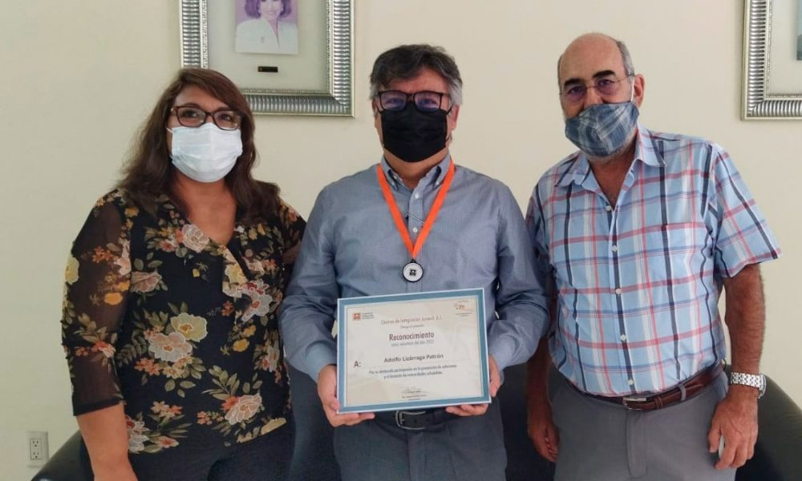

Where untamed rivers cut through breathtaking landscapes, Outdoor WaterPros was founded in 2020 by a group of passionate outdoor enthusiasts with a shared love for white-water rafting. What began as a humble venture fueled by the thrill of the rapids and a commitment to fostering a deep connection with nature, has evolved into a leading force in the adventure tourism industry.

As we stand on the currents of the present, Outdoor WaterPros remains dedicated to pioneering white-water rafting experiences, fostering a love for adventure, and contributing to the preservation of the wild beauty that defines our journeys. Join us as we continue to navigate the rapids, forging new adventures, and creating stories that echo the spirit of Outdoor WaterPros - where every splash is a testament to our passion for the great outdoors.